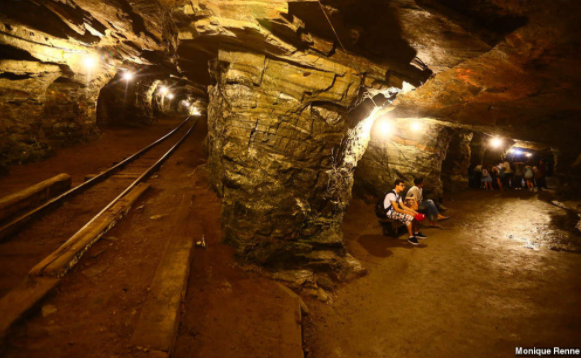
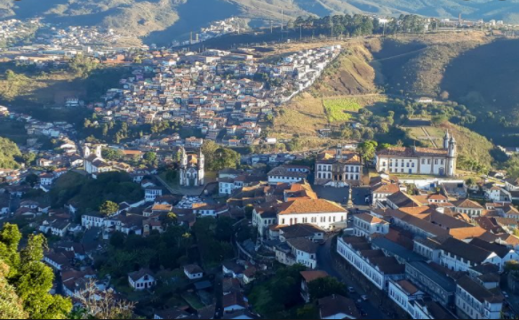
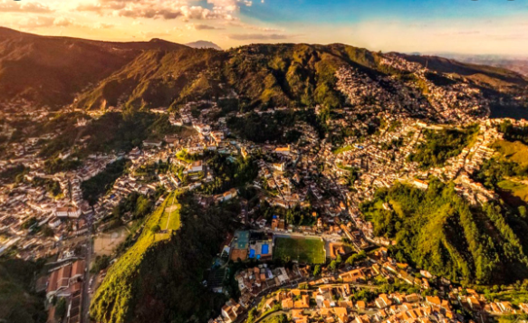
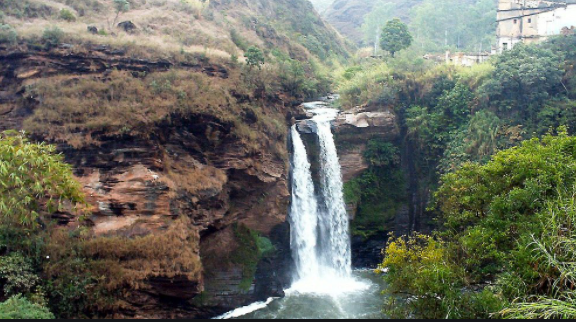

A maravilhosa Minas Gerais
CAPITÓLIO - MINAS GERAIS
Capitólio -MG Capitólio é conhecida como o mar de Minas, por conta de suas muitas águas e lagos. O Lago de Furnas é uma das principais atrações da região, que possui ainda muitos atrativos naturais.
A cidade fica localizada entre a Serra da Canastra e o Lago de Furnas....
OURO PRETO - MINAS GERAIS




Ouro Preto -MG Famosa pela sua importância histórica, a cidade de Ouro Preto também encanta pela beleza de suas construções e ruas de pedra.
Você só precisa estar preparado para as caminhadas nas longas ladeiras da cidade ....